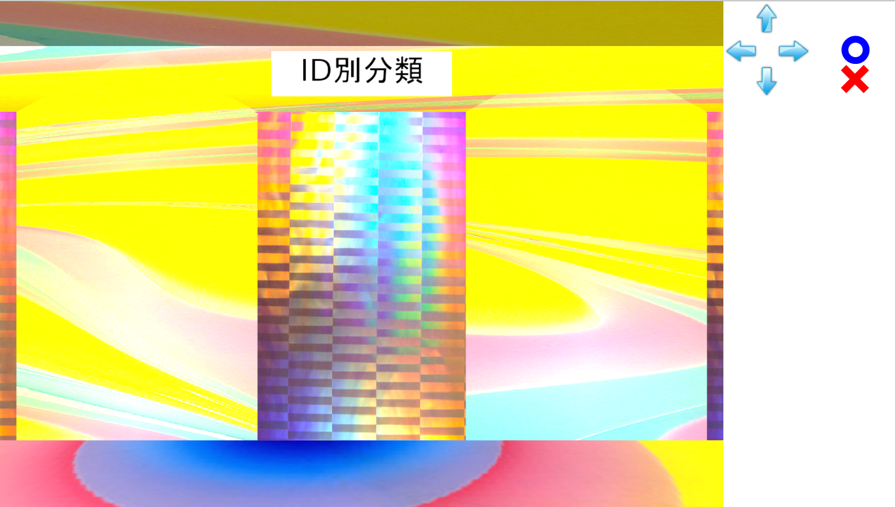
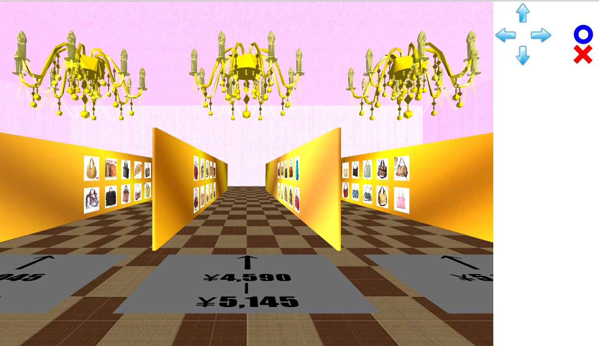
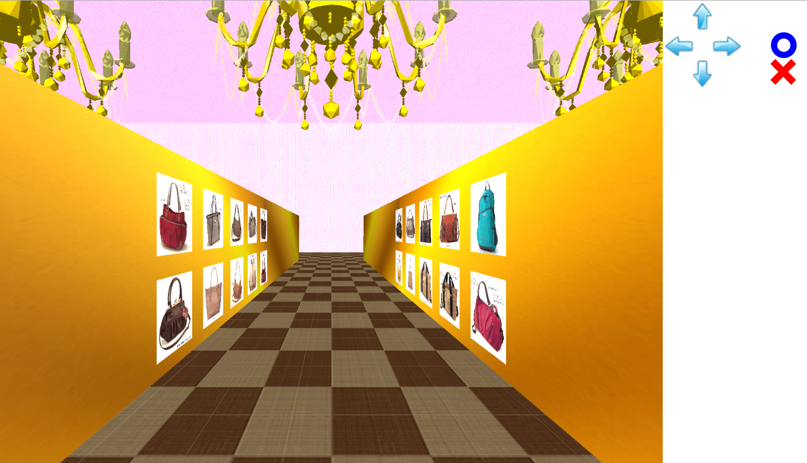
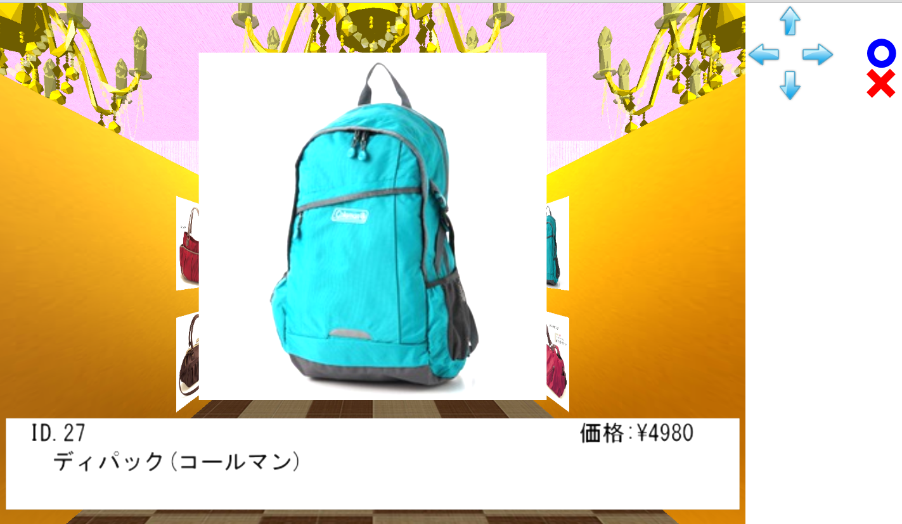

SW108 3Dウェブカタログ 説明書
ドア選択状態
ウェブページを開くと、以下の様な画面が表示されます。

この状態から、自分が入りたいドアを選択することができます。ドアは全部で5つあり、商品の分類手法別に用意されています。右上部分にあるをクリックすることで、自分がいる場所に対して左にあるドアの前に移動、をクリックすることで、自分がいる場所に対して右にあるドアの前に移動します。ドアをクリックすると、そのドアに入ることができます。(他のボタンは使用出来ません)
ライン選択状態
ドアに入ると、以下の様な画面が表示されます。

この状態から、自分が入りたい商品分類のラインに入ることができます。右上部分にあるをクリックすることで、自分がいる場所に対して左にあるラインの前に移動、をクリックすることで、自分がいる場所に対して右にあるラインの前に移動します。をクリックするとそのラインに入り、をクリックすると分類手法別のドアの選択状態へ戻ります。(他のボタンおよびクリックは使用出来ません)
ライン徘徊
ラインに入ると以下の画像に示した状態になります。

この状態で、商品のパネルが陳列されているライン上を徘徊することができます。右上部分にあるをクリックすることで、自分がいるラインの奥へ移動、をクリックすることで、自分がいるラインの手前に移動します。また、をクリックすると首を上に振って、をクリックすると首を下に振ります。
商品の画像パネルをクリックすると、以下の画面に示したように商品の画像が目の前に移動し、下から商品の情報を示したパネルが現れます。

この画像が目の前にある状況では画像に対するクリック操作以外はできません。
画像が目の前にある状況でその画像をクリックすると、画像が元あるところに戻っていき、完全に戻った所で再びラインの徘徊ができるようになります。
をクリックすると分類別のラインの選択状態へ戻ります。(他のボタンおよびクリックは使用出来ません)
3Dカタログ・マニュアル製作者 情報メディア創成学類 3年生 今西麻人